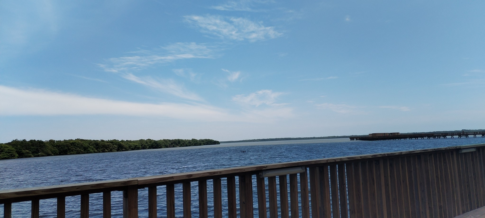
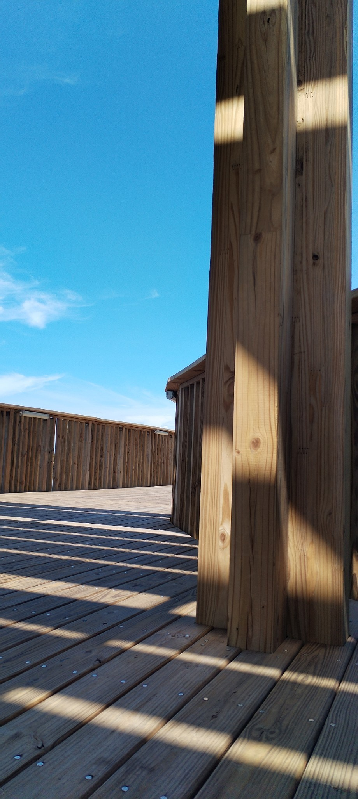

El inicio
Durante el inicio de nuestro recorrido nos encontramos con una imagen interesante y en apariencia, similar a cualquier libro de naturales de primaria.
Un sendero completamente hecho en madera, con múltiples bifurcaciones que se adentran completamente en el corazón del manglar.
Los senderos
Conforme caminábamos, veíamos diferentes tipos de plantas y aves propias de un ecosistema tan húmedo como lo es un manglar.
El trayecto
Originalmente, el guía en la entrada nos informó que el recorrido tendría una duración aproximada de dos horas, sin embargo, al paso en el que íbamos estaríamos ahí por horas.
Los artrópodos
Estos son algunos de los diferentes artrópodos que encontramos mientras realizábamos el recorrido.
La ciénaga
Antes de 1935, la ciénaga de Mallorquín era un sistema de lagunas costeras que comunicaban con el mar, ubicadas sobre la margen izquierda del tajamar occidental de Bocas de Ceniza, conformado por cuatro ciénagas: de Mallorquín, de San Nicolás, Grande y de la Playa.
Un pequeño descanso
 Para este momento parecía que éramos los únicos en esta ciénaga, todo era realmente tranquilo y relajante, un lugar perfecto para tomar una pequeña siesta.
Para este momento parecía que éramos los únicos en esta ciénaga, todo era realmente tranquilo y relajante, un lugar perfecto para tomar una pequeña siesta.
Conclusión
El recorrido por la ciénaga de Mallorquín es una actividad ideal si disfrutas de largas caminatas rodeadas de naturaleza, acompañadas por el envolvente sonido de sus habitantes. Aunque aún no se han terminado todos los senderos, encontrarás suficientes rutas disponibles, llenas de maravillas para apreciar. La naturaleza debe ser una parte sinérgica de nuestro desarrollo como sociedad, y no podemos dejarla de lado. Por eso es tan importante preservar estos espacios para que todos podamos disfrutarlos al máximo.